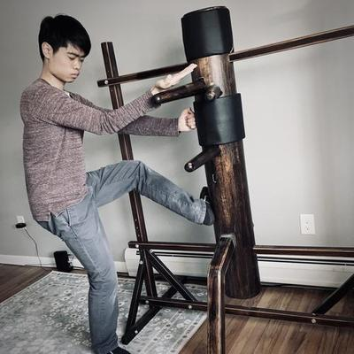
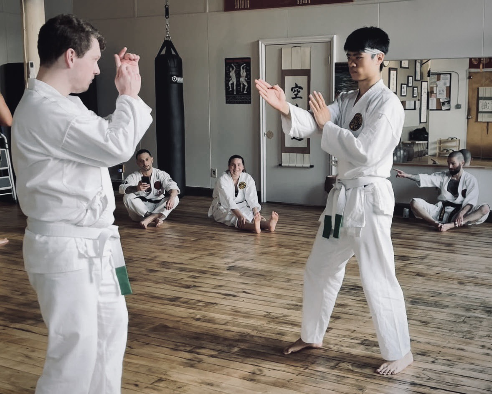
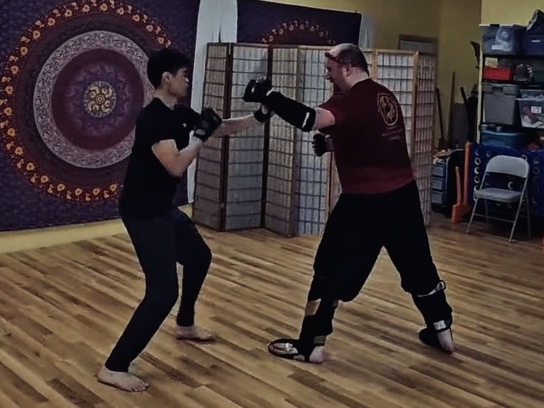

Amherst Wing Chun Club
Casual, beginner-level, free kung fu lessons
Every Saturday 16:30–18:00 near Amherst Center.
20 Dickinson St.
Amherst, MA 01002

Casual, beginner-level, free kung fu lessons
Every Saturday 16:30–18:00 near Amherst Center.
20 Dickinson St.
Amherst, MA 01002
This is a passion project to teach wing chun kung fu. Everyone ages 18–75 is welcome. Please join by messaging me on Signal or email at jennings@amherstwingchun.club.
Teaching is as much of a gift to me as it is to you. This is a free class. Freedom, both of cost and knowledge, are important values to me.
Donations are not expected nor requested. We accept donations for the sole reason of paying rent for an indoor space to train. Contact me in person for Zelle. Please send Monero to the address:
49PdZSfsRpteTDwBfTNFArF7FbPthKSs5KpbJjUDQHLrFxS27Rs7yHUbWDvuSrUx3aBJnNMrHe3rfTx9NWtP4CDNASz8veg

Technically, wing chun is a southern kung fu. Literally, the Chinese characters “咏春” mean “eternal spring.” But if you ask me, I think of it as hand poetry.
It does not have to be. Wing chun does not have nine thousand techniques, it has about 10 hand positions which string together like poetry.
We practice wing chun with softness and grace. Kung fu can be graceful and it can be violent, either way it's a reflection of yourself.

The only fight you need to train for is the one where you'll be outmatched.
Taller and heavier people win almost every fight. Weight classes in competitions exist for good reason—physical advantage outweighs martial ability, and any martial arts claiming to make it even for smaller people is false advertising.
But consider this: you don't need to train for a fight against someone weaker than you, just beat them silly. But what if they are stronger? Hit with your full strength and it'll do nothing to a large man pumped with adrenaline. That is when technique matters, and wing chun teaches us how to fight using techniques without relying on strength.
Donnie Yen's “Ip Man” series of movies are among the most popular kung fu movies.
Movies are fun but obviously fight scenes are scripted and unrealistic. Nonetheless, there are moments where Donnie Yen's wing chun does a good job of depicting its emphasis on close-range trapping and rapid strikes.
People commonly ask, what does wing chun look like in sparring? Below are some clips of me at The Spirit of the Heart's “Open Sparring” event, and goofing off after class at the Shōjin Dōjō .
No. Wing chun uses simple, direct movements, and an upright stance.
We focus on partner drills which are fun and practical. As a casual club, we skip the grueling aspects of traditional regimens e.g. calisthenics and forms. Those are all important but you can practice them on your own at home.
We are not an MMA gym. Wing chun partner drills have minimal risk of injury. We go light not just for safety but to find an appreciation for the so-called “secrets” of internal Chinese martial arts.
The above video was a beginner-level drill called “junior exercise.” We will practice our way up to learning more advanced, free-form drills such as “lap sao”:
| Date | Title | Details |
|---|---|---|
| 2026-09-12 | pak sao & tan sao |
一 Introduction to concepts: centerline theory, economy of motion.
二 New move: pak sao (slapping hand). 三 New move: tan sao (serving hand). |
| 2026-09-19 | Punching |
一 108+ reps of chain punches.
二 New move: wu sao (protecting hand). 三 New move: pak da (pak sao to clear, followed by punch). 四 More practice with pak sao and tan sao. |
| 2026-09-26 | Footwork |
一 Forward stance and side stance.
二 New move: wing chun shuffle-step footwork. 三 Integrate shuffle-step with hand techniques. 四 Play around with knives. |
| 2026-10-03 | Drills, part 1 |
一 Learn the “junior exercise” drill.
二 New move: jum sao (sinking hand). 三 New move: bong sao (crane wing hand). 四 New move: lap sao (pulling hand) and lap da (pull then hit). 五 Learn the “lap sao” drill. |
| 2026-10-10 | Drills, part 2 |
一 New move: “lying palm” or “outside whip”
二 New move: gan sao (ditch hand, low block). 三 Practice the “lap sao” drill. |
| 2026-10-17 | Drills, advanced |
一 New moves: biu sao (darting hand) and biu jee (darting fingers).
二 Forearm conditioning (i.e. pain tolerance) drills. 三 Practice the “lap sao” drill. |
| 2026-10-24 | Siu nim tao | Learn the “siu nim tao” form, sections 1 and 3: a meditative, qigong-like exercise. |
| 2026-10-31 | No class | Halloween |
| 2026-11-07 | TBA | Stay tuned! |
| 2026-11-14 | TBA | Stay tuned! |
| 2026-11-21 | TBA | Stay tuned! |
| 2026-11-28 | No class | Thanksgiving break |